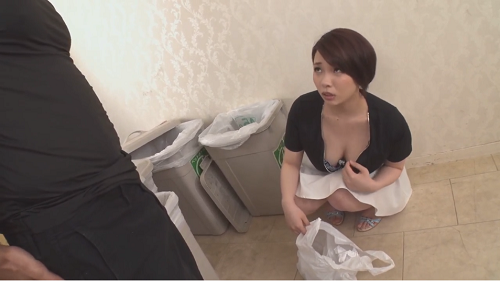

Trai Quê.
Chương 1 Cuộc sống khó khăn và ý chí của chàng trai trẻ
*
*
*
*
Cái nắng oi ả của tiết trời mùa hạ, thời tiết hanh khô nóng bức của một làng quê nghèo khó thường tạo cho ta cảm giác nhớ về tuổi thơ, trải dài trên con đường làng ấy bó rơm bó rạ mùi của lúa mới mới giải khắp vùng quê này. Trong căn nhà cấp 4 đơn sơ ấy, lấp ló hình bóng của một người con trai vạm vỡ với thân hình khỏe mạnh cơ bắp cuồn cuộn đang mải mê với những cuốn sách, những trang giấy với một niềm khát khao mãnh liệt trong trái tim mình “Làm thế nào để thoát nghèo!”..

Trước khi vào câu chuyện ta có thể nói qua về nhân vật Tuấn, Tuấn là con một trong một gia đình thuần nông ở một huyện nghèo ở thành phố Hải Phòng. Quanh năm bố mẹ Tuấn làm nghề trồng trọt, mấy sào ruộng lúa thì cũng chỉ đủ ăn đủ tiêu mà lúc nào cũng phải bán mặt cho đất bán lưng cho trời. Tuấn cũng thế vẫn rất là thương bố mẹ của mình vì thế Tuấn cố gắng học tập thật chăm chỉ làm sao để cho bố mẹ mình đỡ khổ, hàng ngày sáng sớm tinh mơ Tuấn đã dậy sớm để chạy bộ trên những con dê dài, trong khi các bạn cùng trang lứa vẫn còn miên man trong giấc ngủ nồng say. Rồi sau đó đó cố gắng ăn thật nhanh và đến trường bắt đầu một ngày mới tràn đầy năng lượng, sau những giờ học trên lớp thì Tuấn thường về giúp bố mẹ mình, cậu thanh niên rất hoạt bát chăm chỉ nào là nấu cơm quét nhà tất cả các công việc gia đình vì thế bố mẹ Tuấn rất tự hào về người con của mình.
Dù là khó khăn vậy, nhưng Tuấn rất được lòng yêu quý của thầy cô và các bạn bạn và đúng như thế ,không phụ lòng ông trời đã mang đến cho Tuấn sự nghèo khó nhưng đổi lại Tuấn là một người rất đẹp trai, phải nói là quá mỹ liều, cơ thể cân đối và cực kỳ hoàn hảo. Tuấn năm nay vừa tròn 18 tuổi cái tuổi mà các cụ nhà ta thường bảo là 17 bẻ gãy sừng trâu và đúng như vậy, Tuấn với làn da trắng mái tóc rất thư sinh sống mũi cao và đặc biệt có một đôi mắt rất quyến rũ mà rất nhiều nàng đã nguyện chết vì chàng trai ấy. Không những thế Tuấn còn sở hữu một cơ thể cường tráng cơ bắp cuồn cuộn nổi u to ở hai vai với một chiều cao lý tưởng một mét 78 và cân nặng 70 kg sáu múi khi mà ai nhìn cũng phải mê.
Trên con đê dài ấy, có một chàng trai cao lớn đang chạy tung tăng với khuôn mặt rất vui sướng tay cầm tờ giấy báo trúng tuyển vào trường đại học mà hắn từng mong muốn, thực sự thì bao nhiêu công sức hắn bỏ ra không phụ lòng của hắn. Tuấn chạy một mạch về đến nhà người đầu tiên Hắn muốn nói và buồn báo tin vui ấy chính là mẹ của Tuấn bà Ngà. Cái niềm vui sướng ấy thì hẳn là ai cũng biết, cái cảm giác mà khi chúng ta đậu đại học rất là khó tả, cảm tưởng như chúng ta bước sang một trang sử mới một con đường rộng mở hơn cho tương lai của mình. Nếu Tuấn trượt thì chắc chắn hắn cũng chỉ là một thằng nông dân giống như bố mẹ hắn, thầy cô ở trường ai nấy đều rất tự hào bởi vì Tuấn đỗ thủ khoa của một môi trường Đại học lớn ở Hải Phòng, tối hôm đó cả nhà Tuấn mở tiệc ăn mừng nhưng thực ra thì cũng chỉ có bố mẹ và Tuấn và một người bạn thân của cậu ấy.
Thời gian cứ thế trôi lặng lẽ qua từng ngày, từng giờ giờ rồi cũng đến ngày hắn nhập học mẹ hẳn đã phải bán đàn lợn ở quê mới đủ đóng học phí học kỳ 1 cho hắn. Hai hàng nước mắt tuôn rơi ơi, Hắn rất thương mẹ nhưng tuổi của hắn thì chưa làm gì được hắn hiểu điều đó đó và Hắn nói với mẹ rằng hắn sẽ quyết tâm hiện được giấc mơ của mình, đó chính là làm sao để bố mẹ mình có một cuộc sống tốt hơn, không phải vất vả hàng ngày vì hắn. Khi cầm những tờ tiền trên tay hắn nhìn xa xăm về tương lai của mình và đó cũng chính là sự khởi đầu của Tuấn cho một cuộc sống mới, một thế giới mới nơi đó bộn về những ganh đua Cám Dỗ và là con đường mà Tuấn – chỉ là một chàng trai nhà quê muốn lựa chọn.
Những đàn chim chao đảo, bay lượn tung tăng trên bầu trời, hắn tươi cười đi chiếc xe mini Nhật mà bố mẹ mua ở quê cho hẳn thời vẫn còn học cấp 3, Hắn cũng biết vì nhà mình nghèo lên cũng không đòi hỏi gì cả. Đạp một mạch 30 cây số từ vùng quê nghèo ấy lên thành phố nơi mà hắn vẫn còn bỡ ngỡ hắn, nhìn những những dòng xe tấp nập đi lại khói bụi đường phố , đối với hắn vẫn chưa quen với cuộc sống của thành phố nơi mà tiếng còi che ồn ào, tiếng bán hàng rong, tiếng người qua lại tiếng cãi vã không lặng lẽ không yên
bình như vùng làng quê của hắn . Đạp xe rải bước trên con phố với công việc đầu tiên mà hắn muốn tìm là một phòng trọ. Điều đó làm hắn lăn tăn nhiều đến số tiền mình cầm trong tay với số tiền ít ỏi như thế thì làm sao mà có thể thuê được một căn phòng trọ vừa rộng rãi vừa thoáng mát lại tạo điều kiện tốt nhất cho hắn học. Nếu ở ký túc xá thì ở đó rất là đông vừa lộn xộn lại không yên tĩnh hắn không thích chốn đông người, tại vì hắn hiểu rằng mình chỉ là một thằng nhà quê chưa biết nhiều về thế giới bên ngoài nên hắn muốn từ từ để cảm nhận được lời nói những lời chỉ bảo của bố mẹ Hắn .Sợ rằng xa ngã vào những con đường xấu những tệ nạn xã hội mà thực sự rằng Ở cái xã hội hiện nay thì rất là nhiều bạn sinh viên đều sa ngã như thế.
Chợt thổn thức, hắn nhớ về cái tết năm đó Hắn gặp bà Hương là bạn của mẹ , Tuấn cũng đã có dịp nói chuyện với cô ấy, hai cô cháu nói chuyện rất là vui vẻ hòa đồng đồng , cô Hương còn bày tỏ rằng nếu sau này Tuấn có đỗ đại học thì cô sẽ tạo điều kiện hết sức , có thể hiểu cho Tuấn tại vì sao, tại vì nhà cô cũng ở ngay gần trường mà Tuấn có dự định thi vào thôi. Bất chợt một ý kiến rất hay thoáng qua đầu của Tuấn hay là mình gọi điện cho cô ấy nhỉ tội gì mà không gọi chứ, hồi Tết Cô ấy có nói với mình rằng nếu cần giúp đỡ gì thì cô sẽ giúp đỡ mình hết sức có thể mà. Tuấn biết được rằng nhà cô cũng ở rất là gần đây hình như nhớ không nhầm chỉ cách khoảng nửa cây số thôi, thế là Tuấn Mở cờ trong bụng hắn mở điện thoại chiếc Nokia 1280 cũ mà mẹ Hắn mua cho hắn cách đây 2 năm, hắn bấm số của cô tiếng chuông tút tút ở bên kia đầu dây khi một giọng nói rất nhẹ nhàng và đầm ấm.
“Alo ai đấy ạ!” Cô Hương.
Tuấn biết rằng hình như cô không lưu số của hắn.
“Dạ Cháu chào cô ạ! cháu Tuấn, cô còn nhớ Cháu không ạ.”
“À Tuấn con mẹ Ngà phải không, lâu rồi không gặp cháu thế cháu gọi cô có việc gì đấy”.
“Dạ năm nay cháu trúng vào trường đại học ở Hải Phòng, cháu cũng nhớ được biết rằng nhà cô cũng ở gần đó ,cháu có thể nhờ cô tìm cho cháu một cái nhà trọ ở gần đây giá tốt mà cái chính là nó có cái không gian yên tĩnh được không ạ.” Tuấn hí hửng.
“Thế giờ cháu đang ở đâu” Cô hỏi
“Dạ cháu đang ở ngay trưởng thôi ạ!”
“Mà lần đầu cháu lên thành phố bỡ ngỡ quá cháu cũng chưa biết được là nên tìm địa điểm nào cho hợp lý” Tuấn tiếp lời.
“Đợi cô chút để cô ra đón cháu nhé lên trường mà chả gọi cho cô sớm gì cả, tận bây giờ mới gọi cô” Cô nở một nụ cười rất là huyền bí;
“Thế cháu đợi cô ở quán nước ngay cổng trường nhé ” Tuấn nói
“Ừ oki Cháu! Cô xuống ngay đây”
Hắn dắt xe vào một quán trà đá ở ngay vỉa hè trên cổng trường Đại học ấy , đang trầm ngâm thưởng thức ly trà đá giữa cái nóng của mùa hè pha một chút hương vị ấm áp của mùa thu thì chợt có một mùi hương rất là quen thuộc.Hắn đảo mắt nhìn xung quanh để tìm kiếm mục tiêu ấy
“Tại sao cái mùi hương này nó lại quen thuộc thế nhỉ.”
Hắn đã ngửi thấy ở đâu rồi thì phải, bỗng nhiên có một bóng hồng xuất hiện trước mặt hắn. Chính là cô Hương đập vào mắt hắn vào lúc này , cô Hương vừa là một tiên nữ lại vừa là một ân nhân của Hắn khi mà trong lúc khó khăn nhất thì Hắn lại gặp cô, cô ấy vẫn rất xinh đẹp và quyến rũ. Về ngoại hình của cô Hương thì khỏi phải bàn, cô ấy năm nay đã 45 tuổi nhưng mà nếu ai chưa biết tuổi của cô mà nhìn vào đấy thì chỉ nghĩ cũng ngoài 30 mà thôi. Hôm nay cô thật đẹp, mà hình như cô cũng vừa tan làm; cô mặc một bộ đồ công sở rất là hấp dẫn, với với chiếc áo trắng mỏng tanh sâu trong đấy là chiếc coóc xê màu đen rất nổi bật, bên dưới thì là một chiếc quần công sở màu đen 2 ống như kiểu quần tập legging nhưng mà nó là quần kaki công sở, bó sát làm nổi bật những đường nét đầy quyến rũ trên cơ thể của cô. Khuôn mặt thì phải nói là đẹp tuyệt trần , vơi mái tóc ngả vàng cắt ngắn ngang vai. Tôi bần thần mất mấy giây, đặc biệt là đôi mắt của cô nhìn rất là cuốn hút mắt bồ câu mà lại ( Mình đổi cách nhân xưng nhé nhân vật chính sẽ là tôi ,nhiều khi viết mà cứ xưng tôi vào cảm giác như là mình đang hóa thân vào nhân vật chính vậy :))))))) , còn đối với tôi, khi nhìn đôi mắt đó của cô Hương thì là một người phụ nữ rất dâm đãng, rất là khao khát mãnh liệt thứ gì đấy mà một thời gian sau tôi mới biết được. Tôi đơ người ra mất 30 giây khi nhìn cô không chớp mắt. Hình như cô đang tìm kiếm tôi thì phải, tôi liền đứng phắt dậy vươn đôi vai cuồn cuộn cơ bắp vẫy tay chào cô:
“Cô Hương! cháu ở đây này hình như xa nhau có mấy tháng mà cô đã quên mặt cháu rồi hả”.Tôi nháy mắt cười thật tươi.
“Cô không ngờ càng ngày cháu càng lớn nhanh như thế cũng không nhận ra cháu luôn đấy”
“Cô cũng thực sự rất là bất ngờ so với hồi Tết thì cháu đã thay đổi rất là nhiều.”
“Cháu càng ngày càng đẹp trai ra đấy, cứ như thế này thì khối em chết.” Cô cười mỉm nhìn tôi , cô rất đẹp cứ như là gái chưa chồng ấy.
“Hi!Cô cứ trêu cháu!” Tôi bẽn lẽn
Hai cô cháu cứ thế trò chuyện rôm rả, nhìn những giọt mồ hôi lăn trên má cô trông nó cũng quyến rũ như cô vậy. Cảm giác thấy cô là một người phụ nữ rất ướt át và đa tình.
Nó qua một chút về gia đình cô , gia đình cô có hai người con gái một người bằng tuổi tôi tên là Linh và một người lớn hơn tôi 3 tuổi tôi cũng không nhớ tên lắm hình như đang đi du học ở Úc, chồng cô tên Quân là thiếu tá hiện đang công tác ở quân khu 3 Hải Phòng .Khi nói chuyện với cô thì được biết rằng Bác cũng rất ít khi về nhà, tháng thì cũng chỉ về được đôi ba lần do lịch công tác của bác dày đặc, đôi khi phải hai ba tháng mới về.
Ngồi lan man một lúc mình đi luôn vào chủ đề chính.
“Dạ! hôm nay lần đầu tiên cháu mới ra đây thì cháu muốn hỏi Cô một chút là ở gần đây có cái phòng trọ nào mà lúc mà cháu nói chuyện qua điện thoại với cô ấy ạ ,cô có thể giới thiệu hoặc tìm giúp cháu được không ạ.”
Cô ngồi đan tay trầm ngâm một lúc bà nói rằng.
“Hay cháu về nhà cô nhé , nhà cô cũng rộng rãi mà vẫn còn thừa một phòng đấy đứa lớn nhà cô nó đi du học nước ngoài với lại hiện tại thì cũng không có ai ở, tạm thời cháu cứ ở phòng đứa lớn nhà cô nhé”
“Có thấy bất tiện lắm không cô, tại vì cháu ở nhà cô, sợ lại ngại chỗ cô với lại con gái cô nhiều khi nó lại không tiện cô ạ” Tôi đắn đo.
“Ôi dào! có gì đâu chứ cháu, thì cũng coi như con cái trong nhà thôi mà. Cô cũng là bạn của mẹ cháu ngày xưa mẹ cháu cũng giúp đỡ cô nhiều giờ mới có lúc cô giúp đỡ lại.” Cô cười.
Tôi suy nghĩ một lúc ” Mà cũng phải bây giờ nếu mình thuê trọ ở bên ngoài rất là tốn kém, thế tại sao không ở luôn nhà cô nhỉ. Vừa đỡ tốn kém lại vừa có không gian yên tĩnh, không như những nơi khác, chật chội và xô bồ”
Thế là tôi đồng ý với cô luôn với một điều kiện Mỗi tháng tôi sẽ đảm nhiệm phần dọn nhà cho cô , lau chùi nhà cửa , nấu cơm và làm những việc nặng nhọc mà đòi hỏi phải có người đàn ông trong ngôi nhà.
Tôi biết rằng nếu đưa tiền thì chắc chắn cô sẽ không nhận tại vì ngày xưa Cô và Mẹ tôi là hai người bạn chơi với nhau rất là thân thiết. Sau khi học hết cấp 2, cô lên lên đại học còn mẹ tôi tôi thì lấy bố tôi, sau đó ở nhà làm nông nghiệp luôn. Cô May mắn lấy được chú Quân, hiện tại công việc của cô rất là ổn định hình như ở một bộ phận cơ quan hành chính ở Quận thì phải.
Có lẽ vài đồng tiền của tôi cũng chẳng giải quyết được gì đâu, trong thâm tâm tôi thực sự rất
cảm ơn cô, cô như là một người mẹ thứ hai tôi vậy. Vì thế tôi quyết định….
Tôi nói:
“Cháu cảm ơn cô, Cháu đồng ý cháu rất mong cô chú và bạn Linh sẽ tạo điều kiện cho cháu được học tập và ở lại gia đình cô ạ.”
“Thế Cứ thống nhất thế cháu nhé” Cô mỉm cười! Có một một nét gì đấy thoáng qua mà Tôi cảm nhận được người phụ nữ này không đơn giản như tôi nghĩ và cũng từ đây cuộc đời của tôi bước sang một trang mới với đầy dạy những cuộc tình những cuộc ăn chơi những toan tính và và chắc chắn rằng thằng đối với một thằng như tôi thì tương lai sẽ rất rộng mở.
Tôi đứng dậy lóc cóc dắt chiếc xe đạp đi theo cô, cô liền nhảy lên chiếc SH đời mới còn tôi đi xe đạp đằng sau. Nhìn từ phía sau cô cực kỳ quyến rũ, đi trên đường có rất nhiều cánh đàn ông hay liếc nhìn qua, “nhìn cô như thế cơ mà” Trong thâm tâm,tôi suy nghĩ biết bao nhiêu là thứ, về trường lớp, thầy cô về những cái tươi mới ở ngôi trường mình sắp học sự hồi hộp chờ đợi và khát khao để để thực hiện được ước mơ của mình.
Trước mắt tôi là một ngôi biệt thự rất lớn cao ba tầng, hàng trước cổng màu vàng cao và đồ sộ thiết kế theo kiến trúc của phương tây bên trên còn có hình Rồng Bay Phượng Múa. Vừa đến cổng thì bà giúp việc đon đả chạy ra.
“Bà chủ mới về à:”
“Ừ tôi đi làm về tiện thể qua đón thằng cháu là con của bạn tôi tôi sắp tới cháu sẽ ở căn nhà này mong bà để ý cháu hơn nhé”
Bà giúp việc tươi cười.
“Dạ vâng tôi biết rồi bà chủ ạ!”
Cô xuống xe từ từ tắt chiếc xe SH vào trong nhà nhìn thoáng qua căn nhà của cô một chút, căn nhà của cô thiết kế theo kiểu của phương Tây rất cầu kỳ sang trọng ở trong nhà còn có chiếc xe ô tô Camry đời mới “Mà hình như cô không biết đi xe oto, để trong gara này phí của giời.” Tối liếc nhìn mà tiếc hùi hụi
Quay lại chiếc xe đạp cũ kĩ và mình thấy cuộc đời thật xa xăm, một nụ cười buồn, tôi từ từ tiến vào sang ngôi nhà, chạm vào từng thứ thứ mà đối với tôi thực sự nó rất là xa xỉ ,dọn đồ vào phòng nhắm mắt ngủ một giấc Và bắt suy nghĩ về nước Mỹ.
Tỉnh dậy đã 3 giờ chiều rồi, chắc giờ này cô cũng đã đi làm làm tôi đứng dậy đi chầm chậm xuống lấy một ly nước nhâm nhi và cảm nhật nó rất ngọt ngào và sâu lắng. Đang uống thấy con bé Linh, nó bằng tuổi tôi và học cũng trường tôi luôn, con bé cũng xinh đẹp Kiều Diễm Giống y như mẹ nó vậy. Cũng có thể là vì tôi là một thằng nhà quê, mà thực ra mọi người nhìn vào tôi ăn mặc thì cũng có khác gì đâu đâu ,đương nhiên Linh là một tiểu thư nhà giàu lại ở cái thành phố lớn như thế thì tất nhiên rằng tôi sẽ chẳng có cơ hội nào để nói chuyện với em nó đâu. Nhiều lần tôi cũng đã biết được rằng em nó không thích tôi có mặt ở trong căn nhà này chỉ vì tôi là một thằng nhà quê. Mặc dù Cái nhìn của tôi có thể giết chết một vài cô gái đấy, Mà suy cho cùng sau này dần dần suy nghĩ của em Linh đã thay đổi các bạn hãy chờ tiếp nhé.